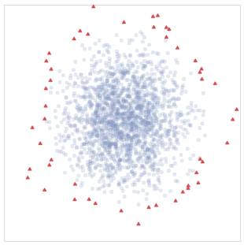

Selected Publications
What is "Typological Diversity" in NLP?
Esther Ploeger*, Wessel Poelman*, Miryam de Lhoneux, Johannes Bjerva
EMNLP 2024 [link to paper]
TL;DR In this work, we systematically investigate NLP research that includes claims regarding 'typological diversity'. We find there are no set definitions or criteria for such claims. We introduce metrics to approximate the diversity of language selection along several axes and find that the results vary considerably across papers.
Multilingual Gradient Word-Order Typology from Universal Dependencies
Emi Baylor*, Esther Ploeger*, Johannes Bjerva
EACL 2024 [link to paper]
TL;DR Discrete typological categorisations may differ significantly from the continuous nature of phenomena, as found in natural language corpora. In this paper, we introduce a new seed dataset made up of continuous-valued data, rather than categorical data, that may better reflect the variability of language.
A Principled Framework for Evaluating on Typologically Diverse Languages
Esther Ploeger, Wessel Poelman, Andreas Holck Høeg-Petersen, Anders Schlichtkrull, Miryam de Lhoneux, Johannes Bjerva
To appear in Computational Linguistics [link to pre-print]
TL;DR We present a language sampling framework for selecting highly typologically diverse languages given a sampling frame, informed by language typology. We compare sampling methods with a range of metrics and find that our systematic methods consistently retrieve more typologically diverse language selections than previous methods in NLP.
